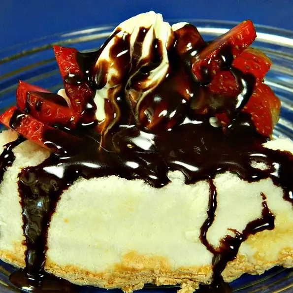

Description:
Simple strawberry shortcake with an extra surprise inside. You can use melted chocolate chips instead of chocolate syrup, if desired.
Ingredients:
- 1 strawberry shortcake dessert cup (such as Hostess®)
- 2 tablespoons peanut butter
- 2 tablespoons whipped cream
- 2 fresh strawberries, sliced
- 1 teaspoon chocolate syrup (Optional)
Steps
- Place shortcake on a plate and spread peanut butter into the cup of the cake. Top with whipped cream and strawberries; drizzle chocolate syrup over the top.